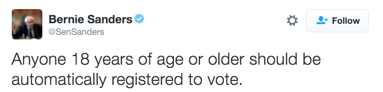
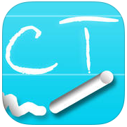

I'm a UX/Interaction Designer with passion for making complex things simple. Besides designing joyful stuff, I love art and travelling. I got a master’s degree in Instructional Technology and Media from Columbia University and I'm currently seeking opportunities with web/mobile product teams.
Contact Me
zhuo.wang@tc.columbia.com
845.800.6577
Exhibit+
Exhibit+ is a web application which motivates people's museum visits from social aspects. A problem of current museum websites (e.g. Columbia Art Initiative) is that there is too much information provided and it is not generated and reviewed by students. Students regard information provided by peers as valuable and relevant. In acknowledging these factors, our app provides succinct information about a limited number of socially promoted exhibitions
Role: Conducted user research, developed end-to-end user interface and user experience for museum education, designed and developed mockups based on user feedback.
Target User:
Students from Columbia University
Date:
Jan - May, 2015
Service:
Web Development, User Experience Design
COGMOS
Cogmos is a platform designed to connect people through insightful stories. People could turn that connections into friendships, collaborations, discussions, adventures, hobby groups, and more.
Role: Conducted user research and user acquisition to build user communities
Date:
Feb 2015 - Now
Service:
User Research, User Acquisition
Media Bias
Media Bias is a web app which aims to raise people’s awareness that their opinions can be easily manipulated by biased information, as well as make readers understand the importance of checking different sources of news reports to reduce the influence of biases.
Role: Identified and researched on user needs, designed user interface and user experience individually
Date:
Nov-Dec, 2014
Service:
Web Development, UI Design, UX Design
Twist Dance
Twist Dance is to help people build up confidence to go to a dance floor by changing their belief of the value of one simple dance as well as teaching them the dance. By realizing simple dance can be appreciated on the dance floor and being able to mastering one, they would be more confident to join the dance floor.
Role: Identified user needs and learning problem, designed user experience and user interface
Date:
Sept - Oct, 2014
Service:
Web Development, UI Design, UX Design
Story-telling in Museum
Story-telling in Museum is a mobile app design focused on deep understanding of the artwork and increase social interaction in a museum setting.
Role: Designed user interface and user experience for the mobile app prototype
Target User:
Young adults based in New York City
Date:
Feb - May, 2015
Service:
UX Design, User Research, Competitor Analysis
AMOUR
AMOUR is an mobile app design aims to help people in relationship understand each other's need
Role: Formed business plan, conducted user and market research, competitor analysis, and designed the user interface for the prototype of a mobile app to enhance communication between couples
Date:
Nov, 2014- May, 2015
Service:
Market Research, UX design, Business Plan
Evolution!
Evolution! is a simulation designed to teach key principles of evolution, such as genetic mutation, natual selection etc.
Role: Applied cognitive theory research in building the user interface
Target User:
High school students in biology classes
A Path To Gender Equality is a multi-player board game aims to raise players’ awareness of gender equality
Role: Designed the game mechanics and game aesthetic, developed different versions of prototype through multiple user tests
Date:
Nov - Dec, 2015
Service:
Game Design,
Talking with Parlermo
Talking with Parlermo is an interactive processing-based artwork for users to play, experience, and discuss.
Date:
Feb 2015
Service:
Color design, Development
Learning Critical Thinking In A Community
MY ROLES
UX Researcher
UX Designer
DATE
Jan 2016 - May 2016
METHODS & TOOLS
Sketch 3
One-on-one Interview
Userbility Testing
APPROACHES
Wireframes
Prototyping
Problem Statement
Online space is a great place to get access multiple points of views and a variety range of topics. I went on Twitter and pick one of those discussions. For example, Bernie Sanders raised a discussion about whether voting registration should be automated. The discussion sometimes look like this.

While, other times online discussions might go to another route.
Social media has a great way to connect and share information and opinions, but it may also contribute to the fragmented conversation by encouraging people to share immediate thoughts. With little or no guidance to a discussion, where the conversation goes can be very unpredictable.
Viewers of the online discussion may face two major challenges:
Confirmation Bias- Viewers tend to accept things that fit in with their belief systems, instead of challenge them
Illusory Superiority- Even viewers know about these biases, they still think other people are more subjective to the biases, not them.
Is there a way to help students develope critical thinking skills through similar conversation? I conducted both literature review and user research in order to come up with the design an intervention for this problem.
Research Process
(a) Literature Review
I reviewed more than 50 research papers on informal learning and critical thinking development and set the learning goal.
The learning goal is reached when the learners can:
Discern fact from opinion
Differentiate a valid supporting evidence for an argument from an invalid one
Be open-minded about opinions they didn’t agree with initially
(b) User Research
Through interviewing 6 college students on how they use and interact on Twitter and Quora, I tried to understand their behaviors and motivations in their context. The findings are:
People provide instant judgments (agree, disagree or ignore) on things they read
People’s judgements of others’ opinions are affected by who the person is, how close they are and what kind of tone they use.
People’s motivation on providing or supporting an opinion or supporting is related to how much they are familiar with the topic and how much they are interested in the topic.
(c) Competitive Analysis
I reviewed 2 other critical thinking mobile-applications “Critical Thinking Basic” and “Think-O-Meter” and found the following problems.
Critical Thinking Basic

Think-O-Meter
Both of the application requires students to write essays, which are normally used in formal learning environment.
The training tool is more effective for solving well-structured problem than real-world ill-structured problem.
"Critical Thinking Basic"asks the learners to perform self-assessment. But learners with little critical thinking skills cannot perform accurate self-assessment (Dunnig et al, 2004).